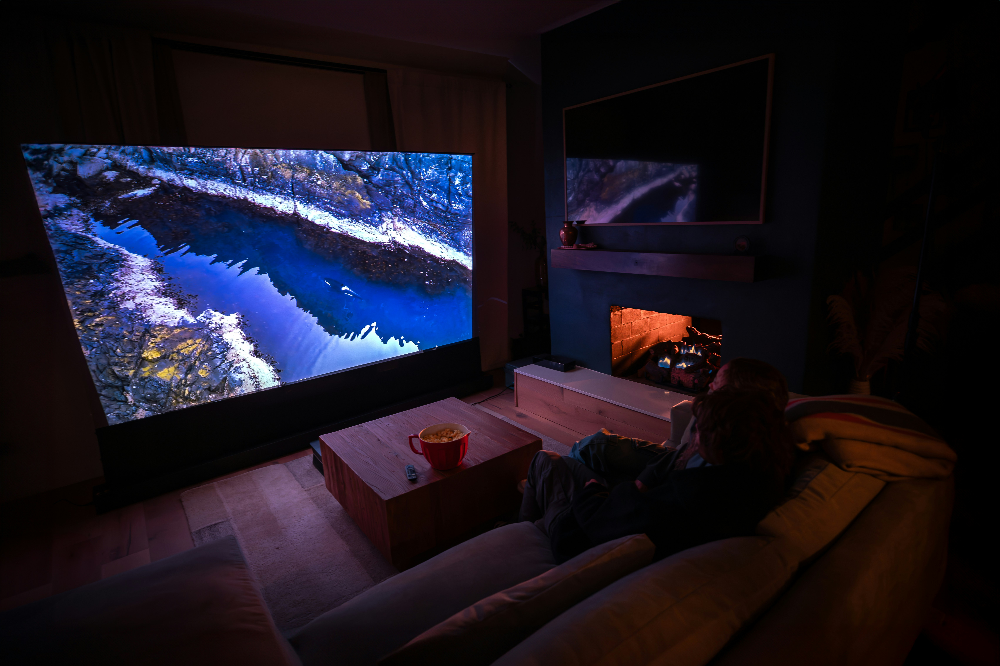

OLED or LCD?
OLED or LCD?
In the current digital era, making the decision between using OLED or LCD technology is no longer simply a matter of cost, but a decision based on specific use cases and visual priorities. With panel manufacturing reaching new heights of efficiency, understanding the fundamental differences in light emission, color accuracy, and overall longevity is essential for any modern user seeking an optimal viewing experience.
Who is this For?
For the Creative Professional
For color-critical professionals, the priority lies in chromatic accuracy and luminance uniformity. Whether engaged in high-end photo editing or complex video production, a display must reproduce colors exactly as they were intended to be seen. Our evaluation focuses on how modern panels maintain consistent output over long work cycles, ensuring that professional standards are never compromised by hardware limitations or color shifting.

A professional home office.
For the Competitive Gamer
Competitive and casual gamers alike require hardware that can keep pace with high-frame-rate content. Beyond mere resolution, we examine the evolution of response times and the significant reduction of motion blur in modern panels. Whether navigating fast-paced shooters or expansive open-world environments, the focus remains on visual fluidity and the elimination of input lag across various panel architectures.

A high-end gaming setup.
For the Home Cinema Enthusiast
Creating a cinematic experience at home demands an analysis of depth and atmosphere. The primary metric for this audience is the contrast ratio—specifically the ability to render absolute black levels without "blooming" or light leakage. We examine how display technology manages high dynamic range (HDR) content to deliver an immersive experience that accurately reflects the director's original vision.

A high-quality home theater.
Key Performance Indicators
To provide a definitive evaluation, this site examines four primary pillars of display performance:
- Luminance The capacity for high peak brightness within well-lit environments.
- Contrast The ability to achieve absolute black levels through precise, per-pixel illumination control.
- Longevity The resilience of panel materials against degradation and permanent image retention over extended periods of use.
- Efficiency An analysis of power consumption profiles relative to total light output and heat management.
For a detailed side-by-side technical analysis of these metrics, please visit our Comparison Guide.